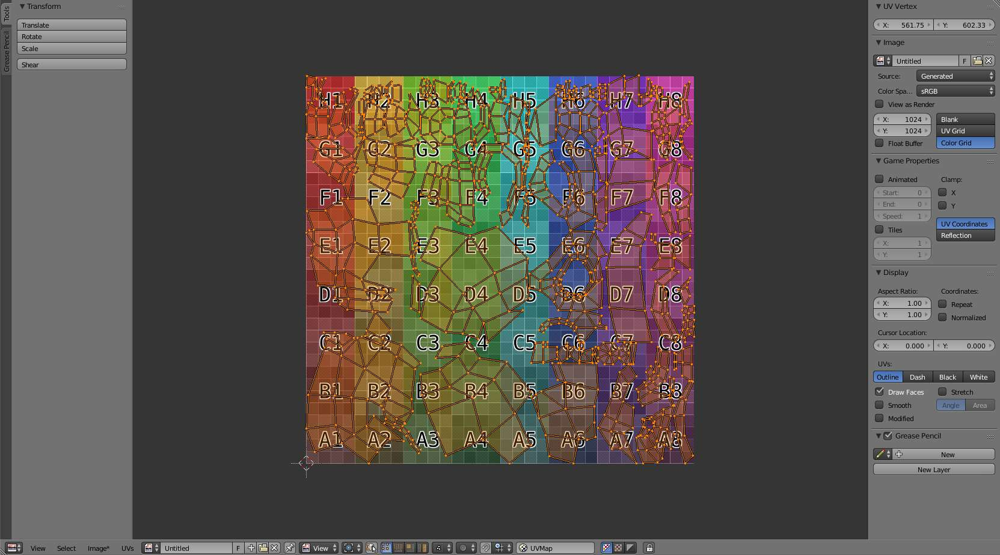

Blender 2.79 Manual
Blender入门
用户界面
编辑器
3D
动画
图像/视频
UV/图像编辑器
简介
视图浏览
图像
UV编辑
显示面板
绘制
影片剪辑编辑器
视频序列编辑器
节点/逻辑
设置
其他
数据系统
制作模型
绘制与雕刻
绑定
动画
物理
渲染
合成
游戏引擎
用户设置
高级应用
管线
问题排查
词汇表
关于本手册
Blender 2.79 Manual
Docs
»
编辑器
»
UV/图像编辑器
»
简介
View page source
简介
¶
TODO 见
https://developer.blender.org/T46878
UV/图像编辑器用于编辑2D素材如图像/纹理和UV。

包含UV贴图和测试网格纹理的UV/图像编辑器。
标题栏
¶
视图
用于控制内容在编辑器中显示方式的工具。见
视图浏览
。
选择
用于
选择UV
图像
包含
图像
相关选项。
UV
包含
网格展开
和
编辑UV
相关工具。
模式
视图
图像和UV。
图像绘制
纹理绘制
.
遮罩
遮罩
.
属性区块
¶
蜡笔
参考
蜡笔
文档。
显示
显示控制选项。
2.79
Loading...
zh-hans
Loading...